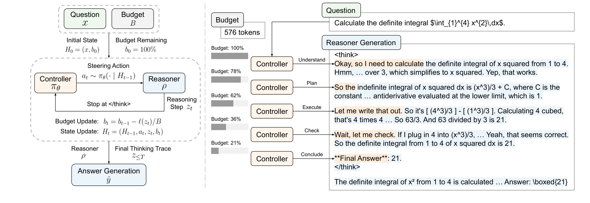
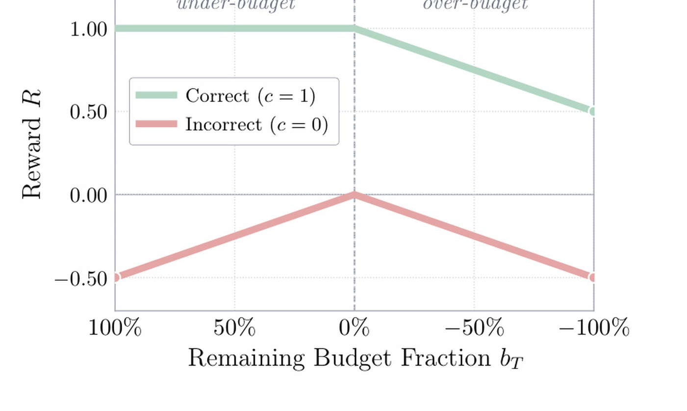
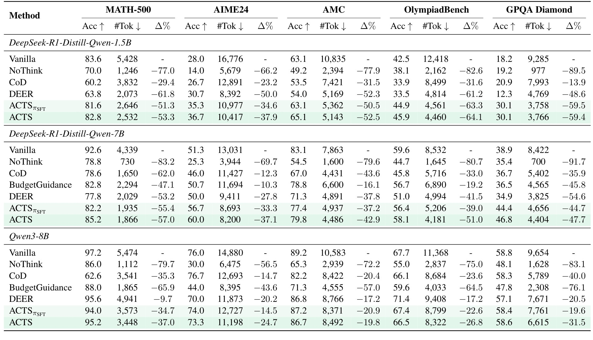
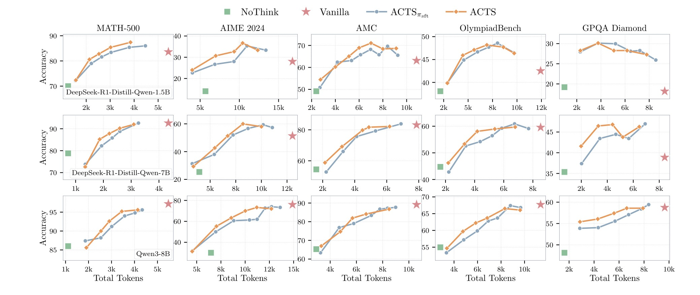
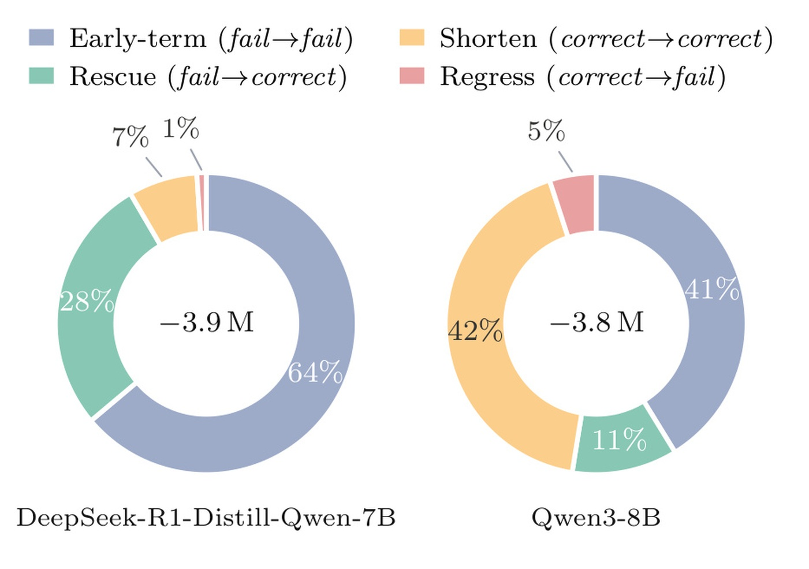

ACTS 这篇论文的唯一论文入口是 arXiv:2606.03965，标题为 “Agentic Chain-of-Thought Steering for Efficient and Controllable LLM Reasoning”。作者来自 UC San Diego 与 Intuit AI Research，一作 Yu Xia 的主机构按论文首页记为 University of California San Diego。论文关注的不是把 Chain-of-Thought 简单压短，而是在推理过程中让一个 controller agent 按剩余预算和已有推理轨迹，逐步选择“接下来应该怎样想”。代码状态：论文摘要页和 PDF 首页给出 https://github.com/Andree-9/ACTS，本轮笔记只把它作为论文中声明的代码入口，不额外核验仓库内容。主类别为 LLM；arXiv 公开日期为 2026-06-02。本文的关键判断是：ACTS 把推理成本控制从全局长度约束推进到分步策略控制，但它的可迁移性仍取决于 controller 在新模型、新任务和新预算口径下是否保持稳定。
1. 背景和问题
长 CoT 推理的常见叙事是“模型想得越久，答案越可靠”。ACTS 这篇论文从相反方向切入：长推理确实能提高最终答案质量，但真实推理轨迹里经常混有重复推导、迟迟不结束的自检、换路后没有收束的探索，以及已经得到候选答案后又把自己带偏的后续验证。只用 token budget、early stopping 或压缩式 CoT 来处理这些问题，会把控制面放在“想多久”上；而 ACTS 认为更关键的控制面是“每一步在做什么功能”。同样 2000 个 token，可以是理解题目、规划、执行、探索、检查、总结、收尾之间比较健康的序列，也可以是执行和检查之间来回打转。论文要解决的就是这个差别。
作者把 ACTS 定义为 Agentic Chain-of-Thought Steering。这里的 agentic 不是让一个外部智能体完整替代 reasoner，也不是让多个 agent 辩论，而是给冻结的 reasoner 外接一个轻量控制器。reasoner 仍负责生成具体推理步骤和最终答案；controller 只在每个回合观察当前轨迹、历史动作和剩余预算，然后发出下一步的 steering action。这个 action 包含两层：一层是离散的 reasoning strategy，例如 UNDERSTAND、PLAN、EXECUTE、EXPLORE、CHECK、SUMMARIZE、CONCLUDE；另一层是自然语言 starter phrase，例如 “Wait, let me verify” 或 “Alternatively, suppose”。前者决定功能角色，后者让冻结 reasoner 的下一段生成自然接上去。
这个设定和以往高效推理方法的差异很清楚。NoThink 之类方法直接让模型跳过思考，适合容易题，但在复杂数学和科学问答上会损失准确率。CoD 或压缩推理方法让中间步骤更短，但它们更像改变 trace 的表达密度，不一定知道什么时候该检查、什么时候该结束。budget forcing 或 token 级 budget guidance 会告诉模型剩多少预算，却仍然主要约束长度。ACTS 试图把 budget 变成策略选择条件：预算充足时允许理解、规划和探索；预算趋紧时更倾向检查、总结和结束；如果答案错误又过早停下，则训练信号应惩罚这种“省 token 但没解出来”的行为。
这篇论文还隐含了一个比表面 token saving 更实际的问题：推理系统的失败经常不是“没有足够算力”，而是“算力被花在了错误阶段”。例如一个数学题已经完成关键代数推导，后面继续做多轮泛化式验证，既不能提高答案可靠性，也会增加误改风险；另一个题还没建立方程就匆忙总结，则 token 很短但答案无意义。ACTS 把这些阶段差异显式标成 controller action，使后续日志可以被审计：失败样本到底是 PLAN 不足、EXPLORE 过多、CHECK 缺失，还是 CONCLUDE 太早。这种可审计性是它区别于纯长度控制的重要系统收益。
论文问题的另一个重要边界是 reasoner-agnostic。作者不希望每换一个 reasoner 就重新训练或微调 reasoner 本身，因此把 reasoner 固定，训练 controller。这样做的好处是部署接口更清晰：controller 可以作为一个独立服务插在推理链路前后，和不同 reasoner 组合；坏处是 controller 的动作只能通过自然语言 starter phrase 间接影响 reasoner，不能直接改内部激活或解码策略。因此 ACTS 的有效性依赖两个假设：第一，reasoner 对这些 starter phrase 足够敏感，能按提示进入对应推理功能；第二，七类策略能覆盖长 CoT 中足够多的功能状态，不会把复杂推理压成过粗的有限状态机。
从系统角度看，ACTS 的问题定义比“省 token”更有价值。服务端经常面对显式的 latency 或成本上限，用户也可能在不同场景下接受不同预算：一次离线分析可以慢一些，交互式问答则要求更快。单纯设置最大生成长度会制造两类失败：困难题还没想完就被截断，简单题已经做完却继续消耗。ACTS 将预算放进每个状态，使 controller 能在同一个问题的不同阶段作不同决定。这也解释了为什么论文后面特别强调 budget-conditioned reward shaping：如果训练只奖励省 token，controller 会学会提前停；如果只奖励正确率，它又可能放任 reasoner 长篇自检。ACTS 的目标是在这两个坏解之间建立可学习的折中。
2. 方法
2.1 MDP：把推理过程变成可控回合
ACTS 的方法章先把推理 steering 写成 Markov Decision Process。给定问题 $x$ 和 thinking-token budget $B$，系统要通过 controller-steered reasoner generation 得到最终答案 $\hat{y}$。controller policy 记作 $\pi_\theta$，冻结 reasoner 记作 $\rho$。初始 steering history 是 $H_0=(x,b_0)$，其中 $b_0=100\%$ 表示预算还完整保留。每一轮 t，controller 看到上一轮为止的历史 $H_{t-1}$，采样动作 $a_t=(u_t,p_t)$；$u_t$ 是策略集合 $U$ 中的高层策略，$p_t$ 是让 reasoner 下一步开始生成的自然语言短语。
论文把一个 reasoner step 定义为语义上自洽的推理单元，通常用段落边界切分，例如以句号或问号后空行结束。第 t 步 reasoner continuation 记为 $s_t$，完整步骤是 $z_t=p_t \circ s_t$。这里 $p_t$ 不是附属装饰，而是 controller 实际施加影响的入口：如果 controller 选择 CHECK 并给出类似 “Wait, let me verify” 的开头，reasoner 后续更可能进入验证；如果选择 EXPLORE 并给出 “Alternatively” 开头，reasoner 更可能尝试新路径。预算更新写成 $b_t=b_{t-1}-\ell(z_t)/B$，其中 $\ell(\cdot)$ 统计 thinking tokens。episode 在 controller 选择 CONCLUDE、reasoner 生成结束思考标记，或达到最大步数时终止。

Figure 1 是理解 ACTS 的主图。左侧展示了 controller 与 reasoner 的交替关系：状态里包含问题、历史推理和剩余预算，controller 给出 steering action，reasoner 在这个 action 的 starter phrase 后继续生成，随后系统更新 budget 和 state，直到进入答案生成。右侧用一个积分例子说明策略顺序大致如何展开：先 UNDERSTAND，再 PLAN、EXECUTE、CHECK，最后 CONCLUDE。这个图重要的地方不在例子本身，而在它把“预算”从外部硬限制变成了每轮决策变量。换句话说，ACTS 不是把 reasoner 截停，而是每走一步都重新判断：现在还剩多少预算，当前 trace 到了什么阶段，下一步应该验证、探索、总结还是结束。
终止后，系统再让 reasoner 基于完整 thinking trace $z_{\le T}$ 生成最终答案，并与真值 $y^\star$ 比较。论文把 terminal reward 写成：
符号解释：$\tau$ 是完整 steering trajectory，$\hat{y}$ 是最终答案，$c=1[\hat{y}=y^\star]$ 表示答案是否正确，$b_T$ 是终止时剩余预算比例。这个公式的设计意味是：正确与否不能脱离预算看，预算使用也不能脱离正确性看。正确但严重超预算说明 overthinking；错误但还剩大量预算说明 premature termination。ACTS 后续的奖励函数正是围绕这两个失败模式展开。
2.2 合成 steering trajectory 与 multi-budget augmentation
controller 的训练难点在于真实专家 CoT 里通常没有显式 action 标注。OpenR1-Math 这类数据有 DeepSeek-R1 生成的长推理 trace，但 trace 只告诉我们 reasoner 写了什么，不告诉我们每一步功能是什么，也没有对应 starter phrase。ACTS 的处理方式是构造 synthetic steering trajectories：先按段落把专家 trace 切成步骤，再用一个 LLM annotator 对每一步做联合标注，输出策略类别和开头短语。策略集合包括七类：UNDERSTAND 用来重述或澄清问题，PLAN 用来制定策略，EXECUTE 用来计算或推导，EXPLORE 用来换一种思路，CHECK 用来核验和纠错，SUMMARIZE 用来归纳中间结果，CONCLUDE 用来给出最终答案并结束 thinking。
这个标注流程让原本只有文本的 CoT 变成 controller 可学习的多轮对话。每一轮 user message 给 controller 当前问题或上一步 reasoner step，以及剩余预算；assistant target 则是 Action 和 Starter。训练时 loss 只计算 controller 的 assistant tokens，不让 controller 学 reasoner 的具体推导内容。这个分工很重要：controller 学的是“什么时候用什么策略和怎样开头”，reasoner 仍保留原本的生成能力。如果 controller 被迫学习完整推理文本，它会变成另一个 reasoner，既增加成本，也破坏 reasoner-agnostic 的目标。
合成轨迹的预算来自原 trace 的 token 位置。作者用 trace 自身长度作为 synthetic budget，然后按每步消耗更新剩余比例。这样所有轨迹天然在结束时刚好用完预算，存在分布过窄的问题：controller 只见过一种“到 0% 时结束”的情形，部署时却会遇到更宽或更紧的预算。为此论文做 multi-budget augmentation，把同一条专家 trace 映射到不同终止剩余预算下。exhausted budget 场景训练 controller 在预算耗尽时果断结束；early termination 场景训练它在还剩 0% 到 40% 时也能结束，模拟用户给了较宽预算或问题较容易的情况。
SFT 目标是标准行为克隆：
符号解释：$D$ 是合成 steering trajectory 集合，$a_t=(u_t,p_t)$ 是第 t 轮 controller 应模仿的策略与 starter phrase，$H_{t-1}$ 是上一轮为止的历史，$\pi_\theta$ 是待训练 controller。这个式子说明 controller 初始化阶段并不直接优化答案正确率，而是在模仿合成专家动作。它的价值是给 controller 一个合理的 strategy curriculum：开头更可能 UNDERSTAND 和 PLAN，中间更多 EXECUTE、EXPLORE、CHECK，后期逐渐 SUMMARIZE 和 CONCLUDE。论文 Figure 2 展示了这种 strategy 与 remaining budget 的联合分布，不过本轮截图没有保留它，因为核心方法解释已经由 Figure 1 和奖励图覆盖。
这一阶段的一个细节是 trajectory filtering。作者会丢弃连续重复同一策略或 starter phrase 的退化轨迹，也会过滤过多交替循环的样本。这个处理看似工程化，但对 controller 很关键：如果 SFT 数据里充满 CHECK-CHECK-CHECK 或 EXPLORE-CHECK-EXPLORE-CHECK 的循环，controller 会学到表面动作，而不是学到预算下的阶段推进。ACTS 的控制器最终要在推理时承担“推进状态机”的角色，因此初始化数据必须让它看到从理解、规划、执行到检查、总结、结束的自然流动，而不是把长 CoT 中的局部啰嗦也当成专家策略。
2.3 预算条件奖励与 GRPO 更新
SFT 只能学到专家 trace 中隐含的策略节奏，不能保证 controller 在真实 rollout 中同时做到正确和省 token。因此 ACTS 第二阶段用 online reinforcement learning。直接给正确答案奖励、给超预算惩罚看似简单，但论文指出这会制造坏激励：controller 可以在题目还没解完时提前 CONCLUDE，从而避免超预算惩罚。尤其在错误答案场景，如果错误但剩很多预算也不惩罚，controller 会学到“早点结束也没事”。
ACTS 的预算条件奖励定义为分段函数：
符号解释：$c$ 表示答案是否正确，$b_T>0$ 表示 under-budget，$b_T<0$ 表示 over-budget，$\alpha\in[0,1]$ 控制惩罚强度。正确答案如果没有超预算，奖励保持 1；如果超预算，奖励随超出程度下降。错误答案无论是超预算还是未用足预算，都会因为 $|b_T|$ 被惩罚；这正是论文用来同时压制 overthinking 和 premature termination 的关键。实践中作者还加入 10% grace margin，使轻微偏离预算边界不至于被过度惩罚。

Figure 3 把这个分段奖励画成两条曲线。蓝色正确曲线在预算边界附近保持高奖励，过度超预算后下降；橙色错误曲线在预算边界附近接近 0，但无论剩太多预算还是超太多预算都会变负。图里最值得注意的是错误答案的 under-budget 惩罚：它告诉 controller，省下 token 本身不是目标，如果题还没解出来就提前停，反而是坏行为。这个设计比只看 token saving 更适合实际服务，因为服务端真正需要的是“在预算内尽量正确”，不是“任何情况下都短”。
RL 更新使用 Group Relative Policy Optimization。对同一个问题采样 G 条 steering trajectory，分别得到 shaped reward $R_i$，再计算均值中心化优势：
符号解释：$G$ 是同一问题采样的 trajectory 数量，$R_i$ 是第 i 条轨迹的预算条件奖励，$\bar{R}$ 是组内平均奖励，$A_i$ 是用于更新 controller 的相对优势。论文沿用 Dr. GRPO 的处理，去掉标准差归一化，以降低长度和难度偏差。这个 trajectory-level advantage 会广播到 controller action tokens；reasoner 生成的 continuation tokens 被 mask 掉，不进入 controller policy gradient。这里的实现细节再次体现了 ACTS 的边界：训练的是 controller 的 action 选择，而不是微调 reasoner 的推理文本。
从训练闭环看，ACTS 的 RL 不是让 controller 学会“越短越好”，而是让它学会在一组候选 trajectory 里选择更合理的阶段推进。某条轨迹可能多用了 token 但最终正确，另一条轨迹可能很短但错误，第三条轨迹可能正确且接近预算边界；组内相对优势会把这些差别反馈到 controller 的动作 token 上。由于 reasoner continuation 被 mask，controller 不会因为 reasoner 某个具体代数句子获得梯度，而是因为自己选择了 PLAN、CHECK 或 CONCLUDE 这类动作获得梯度。这种 credit assignment 不完美，但它符合论文的模块化目标。
2.4 异步 controller-reasoner 服务链路
ACTS 在推理时需要 controller 和 reasoner 多次交替调用，直觉上会增加延迟。论文没有回避这个问题，而是把 controller 和 reasoner 部署成两个独立 SGLang server，由 orchestrator 通过异步 HTTP 驱动每个样本的 MDP loop。这样一个样本内部仍然是交替的，但多个样本之间可以在 request level 并发推进。controller 处理一个样本时，reasoner 可以处理另一个样本；reasoner 生成时，controller 服务也不会阻塞整个 batch。论文后续 throughput 实验显示，这种设计让 ACTS 接近 Vanilla 的吞吐，而 DEER 这类 probe-and-resume 方法反而更难被批处理隐藏开销。
实现设置上，controller agent 使用 Qwen3-4B-Instruct-2507。SFT 在构造好的 synthetic steering trajectories 上训练，学习率为 1e-5、global batch size 64。RL 阶段使用 GRPO，学习率 1e-6、group size 8、rollout batch size 32、train batch size 64、惩罚系数 $\alpha=0.5$。RL 训练时 controller 搭配 DeepSeek-R1-Distill-Qwen-7B 作为冻结 reasoner。评估时测试三个 reasoner：DeepSeek-R1-Distill-Qwen-1.5B、DeepSeek-R1-Distill-Qwen-7B 和 Qwen3-8B。这个设置允许论文检验 controller 是否能跨 reasoner 迁移，尤其是 Qwen3-8B 与训练 reasoner 不同族。
方法整体可以概括为四层。第一层是 MDP interface，把推理 trace 切成可控回合。第二层是 synthetic trajectory，把没有 action 标签的专家 CoT 转成 controller 可学习的 Action/Starter 序列。第三层是 budget-conditioned RL，用奖励函数同时惩罚超预算和过早错误终止。第四层是异步服务，把多轮 controller-reasoner 调用的延迟摊到并发请求中。四层缺一不可：只有 MDP 没有训练信号，会停在形式化；只有 SFT 没有 RL，无法对真实答案和预算做闭环优化；只有 RL 没有异步部署，系统成本可能抵消 token saving。
还有一个容易被忽略的细节是答案生成和 thinking steering 的分离。ACTS 的 controller 只控制 thinking block 内的下一步，不直接写最终答案；episode 终止后，final answer 仍由 reasoner 基于完整 trace 生成。这避免了 controller 变成答案模型，也让 reward 可以绑定到完整轨迹而不是某个局部动作。代价是 controller 的 CONCLUDE 动作必须足够谨慎：它一旦过早结束，后续 answer generation 很可能只能基于不完整 trace 给出错误答案；它如果迟迟不结束，正确 trace 又会被额外检查和探索拖长。预算条件奖励正是在这个边界上给 controller 施压。
从复现角度看，最难复刻的可能不是 MDP 公式，而是轨迹构造质量。段落切分、strategy 标注、starter phrase 抽取、重复轨迹过滤、多预算重标定，每一步都会影响 controller 学到的策略先验。如果 annotator 把大量 EXECUTE 误标成 CHECK，controller 就会在中期过度核验；如果 starter phrase 抽得太长，reasoner 可能被迫继承过多具体内容，而不是只继承功能角色。因此 ACTS 的论文结果应理解为“在一套特定轨迹构造流程下，策略级控制有效”，而不是任意七类标签都能自然得到同样效果。
我对方法的保留意见主要在两个接口。第一，starter phrase 是自然语言控制，优点是通用，缺点是动作边界不硬。不同 reasoner 对同一个 “Wait, let me verify” 可能反应不同，有的会真的核验，有的只是生成核验口吻但不改变推理路径。第二，budget fraction 是按 token 消耗线性更新，但推理难度并不线性；某些题在最后一步才需要关键 insight，某些题开头规划正确后就很快收束。因此 ACTS 更像一个可学习调度器，而不是完整的推理最优控制解。它给出了比长度约束更细的控制面，但还需要和难度估计、置信度估计或 verifier 结合，才能在更宽任务上稳定工作。
3. 实验结果
3.1 主结果：先看准确率与 token 同时发生了什么
实验数据覆盖五个 benchmark：MATH-500、AIME24、AMC、OlympiadBench 和 GPQA Diamond。前四个主要是数学推理，GPQA Diamond 用来测试 science QA 的跨域泛化。指标包括 Accuracy 和 total #Tokens，后者统计 reasoner tokenizer 下的 thinking 与 answer generation；对 ACTS 来说，#Tokens 包含 controller 和 reasoner token。基线包括 Vanilla、NoThink、CoD、DEER、BudgetGuidance，以及只经过 SFT 初始化的 ACTSπSFT。这个实验设计的核心不是单看省了多少 token，而是看省 token 后是否仍接近或超过 Vanilla。

Table 1 是论文最关键的证据。DeepSeek-R1-Distill-Qwen-1.5B 上，Vanilla 在 MATH-500 的准确率为 83.6、平均 token 为 5,428；ACTS 为 82.8、2,532，节省 53.3%，准确率只低 0.8 个百分点。在 AIME24 上，Vanilla 为 28.0、16,776，ACTS 为 36.7、10,417，既更准又省 37.9%。GPQA Diamond 上，1.5B reasoner 的 Vanilla 只有 18.2，而 ACTS 达到 30.1，同时 token 从 9,285 降到 3,766。这个结果支持作者关于弱 reasoner 被结构化 steering 纠偏的说法：不是所有 token saving 都来自少想，有些来自避免走入长而错的轨迹。
DeepSeek-R1-Distill-Qwen-7B 上，ACTS 同样表现出较强的 accuracy-token 折中。MATH-500 从 Vanilla 的 92.6/4,339 变为 ACTS 的 85.2/1,866，准确率下降但节省 57.0%；AIME24 从 51.3/13,031 提升到 60.0/8,200，节省 37.1%；GPQA Diamond 从 38.9/8,422 提升到 46.8/4,404，节省 47.7%。Qwen3-8B 上，ACTS 在 MATH-500 取得 95.2/3,448，相比 Vanilla 97.2/5,474 省 37.0%；AIME24 为 73.3/11,198，相比 Vanilla 76.0/14,880 省 24.7%；GPQA Diamond 为 58.6/6,615，几乎保持 Vanilla 的 58.8，同时省 31.5%。
这些数值需要谨慎读。ACTS 不是在所有 cell 都严格优于 Vanilla，也不是每个模型都能无损省 token。强 reasoner 在某些数学任务上已经接近高准确率，controller 介入会带来少量 accuracy trade-off；弱 reasoner 和 GPQA 这类容易 overthinking 的任务上，controller 更可能带来准确率提升。ACTSπSFT 与 ACTS 的差距说明 RL 阶段有实际贡献：SFT 已经学到策略节奏，但 budget-conditioned reward 能进一步把动作选择对齐到答案正确率和预算边界。
3.2 预算扫描：ACTS 的控制性来自连续曲线
主结果表只能说明某个预算点上的效果，Figure 4 则回答“如果预算不同，ACTS 是否仍可控”。作者把 ACTS thinking budget 从紧到接近 Vanilla 扫描，横轴是 total tokens，纵轴是 accuracy，按三个 reasoner 和五个 benchmark 画成 15 个子图。论文文字强调，曲线大多平滑且近似单调，ACTS 曲线通常位于 Vanilla 和 NoThink 两端连线之上。这意味着 ACTS 不是简单混合“全想”和“不想”，而是在中间预算区间形成更好的效率-准确率前沿。

Figure 4 的阅读方式是看每个小图中 ACTS 点列随 token 增加如何移动。若方法只是随机早停，曲线会波动大，或者落在 NoThink 与 Vanilla 的线性插值附近；ACTS 的点列大多形成较稳定的上升或平台趋势，说明 controller 对预算有响应。对 DeepSeek-R1-Distill-1.5B，AIME 和 GPQA 在大预算端出现轻微反转，论文解释为 controller 随预算增大调用更多 EXPLORE 行为，弱 reasoner 无法稳定承接过多探索。这一点很重要：更多预算不必然更好，因为策略空间里的“探索”也可能扩大错误路径。
预算扫描还支撑了 ACTS 的部署价值。真实系统很少只有一个固定预算，更多是按请求等级、用户等待时间、问题难度或服务成本设置不同上限。如果 ACTS 只能在某个精调预算点上工作，它更像 benchmark trick；如果它能在一串预算点上给出平滑 trade-off，就更像可调服务组件。Figure 4 显示 ACTS 至少在论文测试范围内具备这种可调性，但也暴露了下一步问题：controller 目前需要外部给定 budget，并不会自动估计题目难度。如果未来部署，可能还需要 difficulty estimator 或 early-confidence signal 来决定初始预算。
3.3 节省分解：Rescue 与 Shorten 比 Regress 更重要
为了避免“ACTS 只是截短了 reasoning”这个质疑，论文把每个 trial 按 Vanilla 与 ACTS 的正确性关系分成四类。Early-term 是两者都错，Rescue 是 Vanilla 错但 ACTS 对，Shorten 是两者都对，Regress 是 Vanilla 对但 ACTS 错。作者选取达到 Vanilla accuracy 的最小 ACTS budget，再统计 token saving 来自哪类 trial。这个分解比总 token saving 更有解释力：如果大部分节省来自 Regress 或 Early-term，就说明方法可能在牺牲答案；如果来自 Shorten 和 Rescue，则说明 controller 确实减少了冗余或纠正了失败轨迹。

Figure 5 显示，DeepSeek-R1-Distill-Qwen-7B 的 token saving 中，Rescue 占 28%，Shorten 占 64%，Regress 只有 1%；Qwen3-8B 中，Shorten 占 42%，Rescue 占 11%，Regress 占 5%。这个结构和模型能力有关。较弱 reasoner 更容易在长 trace 中陷入错误自检或混乱探索，因此 controller 的 CHECK、SUMMARIZE、CONCLUDE 序列有机会把它从错误路径救回来；较强 reasoner 本身更常做对，ACTS 的主要价值变成减少解出答案后的重复验证和策略震荡。无论哪种情况，Regress 占比都较低，支持作者关于“有效 steering 而非均匀裁剪”的论断。
论文还报告了吞吐实验：ACTS 在 MATH-500 上与 Vanilla 的 #Tok/s 接近，Qwen3-8B 几乎持平，DeepSeek-R1-Distill-7B 约低 11%；DEER 只有 Vanilla 大约一半吞吐。虽然本轮没有保留 Figure 6 截图，但这个结果和方法章的异步双服务设计相互印证。需要注意的是，吞吐实验使用 8×A100 80GB，ACTS 将 GPU 按 controller/reasoner 切分为 4+4；如果部署环境不是这种高并发、高 GPU 配置，额外 controller 调用是否仍能被摊平，需要单独压测。
实验部分的另一个风险是 benchmark 口径。MATH-500、AIME、AMC、OlympiadBench 都偏数学，controller 的 synthetic trajectories 也来自 OpenR1-Math。GPQA Diamond 的提升说明策略可能跨到 science QA，但这还不足以证明它对代码、工具调用、多轮 agent 任务或开放式写作同样有效。ACTS 的策略集合是通用认知功能，但 reward 仍然依赖可判定答案正确性的任务；对于没有明确 ground truth 的任务，Eq. 3 的 correctness $c$ 很难直接获得，训练和评估都要改造。
4. 总结
ACTS 的贡献可以压成一句话：它把高效推理从“控制长度”推进到“控制推理步骤的功能”。controller 不直接替 reasoner 解题，而是根据历史 trace 和剩余预算选择 UNDERSTAND、PLAN、EXECUTE、EXPLORE、CHECK、SUMMARIZE、CONCLUDE 等策略，并用 starter phrase 引导冻结 reasoner 进入下一段生成。训练上，SFT 从合成 steering trajectories 学策略节奏，RL 用 budget-conditioned reward 同时惩罚超预算正确答案和提前停止的错误答案。实验上，它在多个 reasoner 和 benchmark 上展示了较强的 token saving，并在部分困难任务上超过 Vanilla 准确率。
我认为这篇论文最值得跟踪的点是控制面设计。过去很多 efficient reasoning 方法把 CoT 当作可压缩文本，ACTS 把它看成一串有功能角色的状态转移。这个视角更接近真实推理调度：有些步骤该探索，有些步骤该执行，有些步骤该核验，有些步骤该停。它也给工程系统提供了更清晰的接口：controller 可以独立服务，reasoner 可以冻结，预算可以外部传入，策略日志可以被审计。相比直接早停，ACTS 的可解释性更强，因为每一步都有 action label 和 starter phrase。
局限也很明显。第一，controller 训练主要来自数学推理轨迹，跨到更大模型、专有模型或非数学复杂任务还没有充分验证。第二，方法假设推理预算由外部提供，尚未解决“这道题应该给多少预算”的自动分配问题。第三，controller 通过自然语言短语间接控制 reasoner，若 reasoner 对 starter phrase 不敏感，或对某些短语过度服从，效果可能不稳定。第四，奖励函数依赖可判定正确性的任务，对于开放式生成、多目标 agent 任务或推荐系统线上目标，需要新的 reward 与评价口径。第五，异步服务的吞吐优势依赖并发和硬件配置，低并发场景可能更容易感受到多轮调用延迟。
后续如果要复现，我会优先检查三件事。一是 action annotation 的稳定性：同一 reasoning step 被不同 annotator 或不同采样参数标成同一策略的比例如何，starter phrase 是否有分布偏差。二是 controller 对 budget 的真实响应：固定问题、扫描预算，观察策略序列是否从 UNDERSTAND/PLAN/EXPLORE 平滑转向 CHECK/SUMMARIZE/CONCLUDE，而不是只改变输出长度。三是失败案例：尤其是大预算下 EXPLORE 增多导致弱 reasoner 反转的情况，这关系到 ACTS 能否和 difficulty estimator、confidence signal 或安全回退结合。
对日常论文库来说，ACTS 可以和两类工作放在一起比较：一类是 token-budget-aware reasoning、early exit、CoT compression，关注长度和成本；另一类是 reasoning strategy、meta-reasoner、activation steering，关注推理行为。ACTS 的位置在两者交叉处：它没有改 reasoner 内部，也没有只做后处理，而是在推理回合之间插入一个可训练 controller。它的实际价值不取决于“省 token”这个表面数字，而取决于这种 controller 是否能稳定识别推理阶段、减少无效自检、及时结束已解决问题，并在困难题上避免过早放弃。